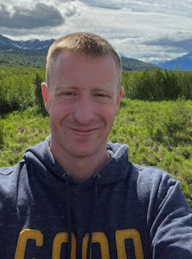

Justin Michael Squires

Home About Contact
Professional Summary
As an experienced Air Traffic Control Training Manager with over 15 years in
the United States Air Force, I have honed my leadership skills, managing teams and
complex operations under high-stakes conditions. My career in aviation has been marked by
a commitment to excellence, from overseeing critical missions and ensuring the safety of
multi-million-dollar assets to training the next generation of air traffic controllers.
Now, I am channeling that same dedication and passion into a new challenge: transitioning to
a career in computer science. Through my studies in computer science, web development, and
programming with Python and C++, I am building the skills necessary to bridge my expertise in aviation with
emerging technologies. I am particularly interested in roles that allow me to contribute to the
aviation industry through innovative tech solutions, whether that be in software or web development,
cybersecurity, or data analysis. Driven by a relentless curiosity and a commitment
to continuous learning, I am eager to leverage my unique blend of aviation experience
and tech skills to make a meaningful impact in my next role.
Key Skills
- Air Traffic Control (ATC) Operations
- Radar Systems Management
- Crisis Management & Emergency Response
- Team Leadership & Supervision
- Training & Development
- Safety & Compliance (FAA & ICAO)
- Operational Planning & Coordination
- Resource Management
- Software Development (Python & C++, basic understanding)
- Web Development (basic understanding)
- Technical Writing and Documentation
Professional Experience
Training Manager, Air Traffic Control
United States Air Force | JBER, Alaska | 2022 - Present
-
Led a team of 19 Air Traffic Control personnel, overseeing training,
development, and daily operations supporting Alaska's NORAD Region F-22
and E-3 alert missions, valued at $9.4B.
-
Directed the air traffic control training program, managing a 250% training load
and ensuring compliance with FAA and Air Force standards, resulting in the certification
of five tower controllers and 68 aircrew qualifications.
-
Orchestrated the recovery of a downed unmanned aircraft system, coordinating with base defense
to secure a $1M ISR asset, demonstrating crisis management and quick decision-making.
Senior Watch Supervisor
-
Managed ATC operations for USAFEs busiest airspace, controlling 58K annual joint sorties,
facilitating air refueling for 10.7K aircraft in support of OIR/OAF mission objectives.
-
Coordinated emergency response operations, directing a team of 6 through contingency exercises
and critical incidents, securing assets valued at $120M and ensuring operational readiness.
Air Traffic Control Supervisor
United States Air Force | JBSA-Lackland Kelly Field, TX | 2017 - 2021
-
Supervised a team of 36 air traffic controllers, ensuring the safe and
efficient management of air traffic operations across a 2.2K square mile airspace.
-
Directed operations for the JBSA Air Show, managing the arrival and departure of
32 aircraft and coordinating with multiple agencies to ensure safety for over 176,000 spectators.
Ground Controlled Approach Watch Supervisor
United States Air Force | Soto Cano Air Base, Honduras | 2016 - 2017
-
Provided ATC services in support of Joint Task Force-Bravo, coordinating
with multi-national forces and ensuring compliance with international,
FAA, and local standards.
-
Achieved Watch Supervisor qualification, enhancing manning by 28%
and supporting missions critical to the SOUTHCOM area of responsibility.
Air Traffic Control Journeyman
United States Air Force | Dover AFB, DE | 2009 - 2016
-
Directed the movement of over 65K military and civilian aircraft annually,
safeguarding assets valued at up to $7.5B.
-
Played a key role in multiple emergency response operations, including the safe
recovery of aircraft experiencing hydraulic failures and other critical issues.
-
Instrumental in Dover AFB winning the Airfield Operations Flight of the Year
and other awards through consistent excellence in ATC services and leadership.
Education
Associate of Applied Science in Air Traffic Operations & Management
- Community College of the Air Force (CCAF) | 2017
Bachelor of Arts in Computer Science (In Progress)
- Thomas Edison State University (TESU) | 2021 - Present
Awards and Recognitions
- Squadron NCO of the Year | 2020
- Squadron NCO of the Quarter | Multiple Times
Additional Information
- Security Clearance: Secret
- Programming Languages: Python (Intermediate), C++ (Basic), Java (Basic)
- Languages: English